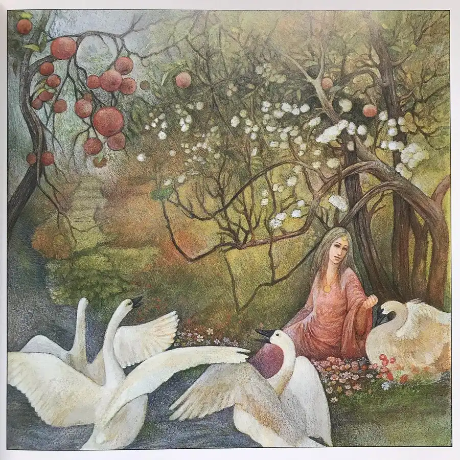
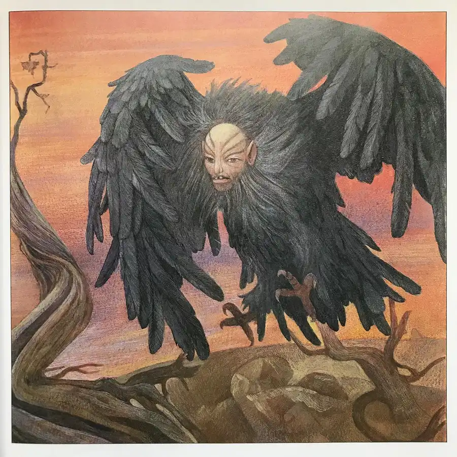
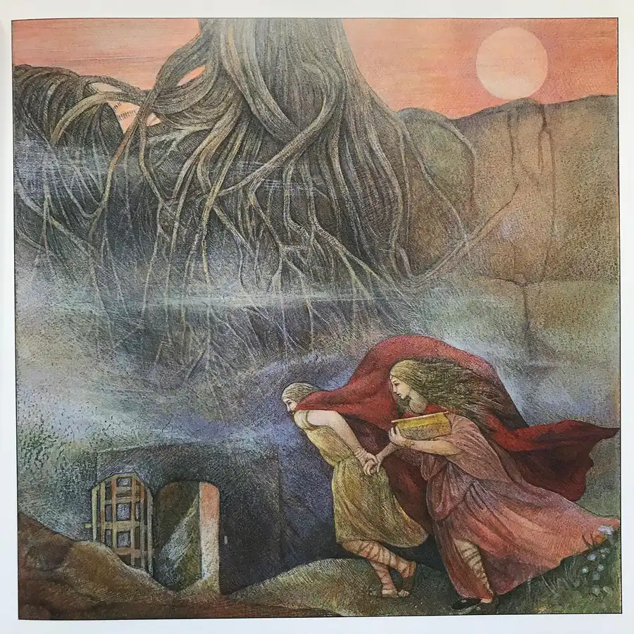
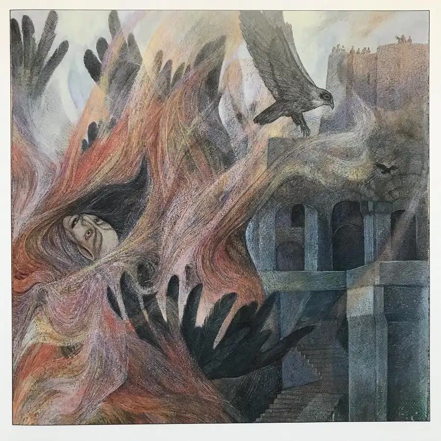

For today, an adaptation of a Norse myth: Iduna and the Magic Apples, written by Marianna Mayer and vividly illustrated by László Gál. Both text and art depict the villainous giant Thiassi (who in the original myth takes the form of an eagle) as a monstrous bird with a human head, a baroque flourish amid the serenely primordial beauty of the story’s ancient setting. #laszlogal #mariannamayer #norse #norsemythology #book #books #childrensbooks #beautifulbook #beautifulbooks #beautifulbookcovers #picturebook #picturebooks #picturebookillustration #picturebookillustrations #picturebookart #classicchildrensbooks #childrensbookillustration #childrensliterature #illustration #kidlit #kidsbooks #bookworm #booklover #booklovers #bibliophile #bookstagram #bookstagrammer #bookstagrammers #instabook #instabooks




